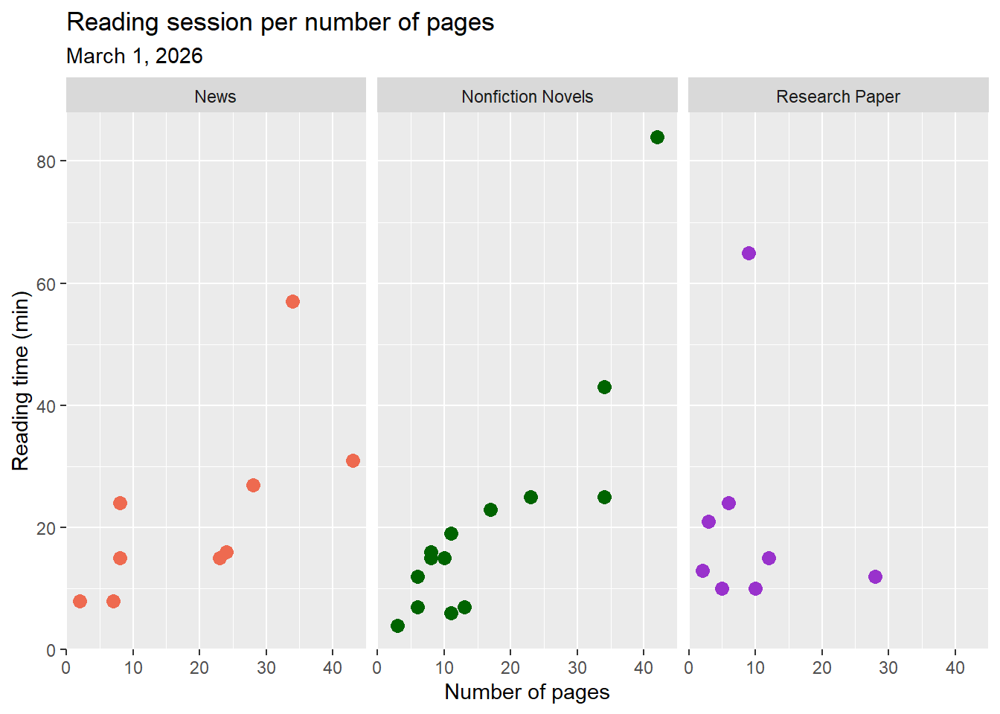
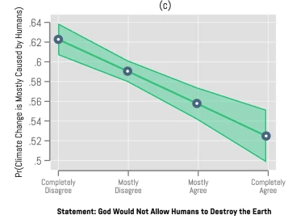

library(tidyverse) #load in packages
library(here)
library(janitor)
library(readxl)
library(ggeffects)
salinity <- read.csv( #read in pickleweed data using here function
here("data","salinity-pickleweed.csv"))
reading_data <- read.csv( #read in personal data using here function
here("data", "time_spent_reading.csv"))Homework #3 ENV S 193DS
Part 2 Problems
Problem 1. Slough soil salinity
a. An appropriate test
Both Spearman’s correlation and Pearson’s correlation test could determine the strength of relationship between salinity, a continuous predictor variable, and California pickleweed biomass, a continuous response variable. Pearson’s correlation is a parametric test, meaning is assumes normality and uses the actual measurements of continuous data to show the strength, which is most likely the best test for this dataset. Meanwhile, Spearman’s correlation uses ranks instead of the actual values to determine a monotonic relationship between variables, making it more suitable for non-normal distributions with heavy outliers.
b. Create a visualization
salinity_vis <- ggplot(salinity, #create plot using salinity data frame
aes(x = salinity_mS_cm, #set x and y axis
y = pickleweed)) +
geom_point(data = salinity, #add in data points from salinity dataframe
aes(x = salinity_mS_cm, #set x axis
y = pickleweed), #set y axis
color = "green") + #set color of points
theme_minimal() + #change theme
labs(x = "Salinity (mS/cm)", #change x axis title
y = "Pickleweed biomass (g)", #change y axis title
title = "As salinity increases, pickleweed biomass increases") #change plot title
salinity_vis #display plot
c. Check your assumptions and run your test
Check your assumptions
pickleweed_qq <- ggplot(data = salinity, #create plot with salinity date frame
aes(sample = pickleweed)) + #sample is pickleweed
geom_qq_line(color = "red3", #create QQ line and set color to red
linewidth = 1) + #set line width
geom_qq() #create QQ plot
salinity_qq <- ggplot(data = salinity, #create plot with salinity date frame
aes(sample = salinity_mS_cm)) + #sample is salinity
geom_qq_line(color = "red3", #create QQ line and set color to red
linewidth = 1) + #set line width
geom_qq() #create QQ plot
pickleweed_qq #view QQ plots
salinity_qq
salinity_vis #display scatterplot from previous
Running the test
cor.test(salinity$pickleweed, salinity$salinity_mS_cm, #run pearson's correlation between pickleweed biomass and salinity
method = "pearson")
Pearson's product-moment correlation
data: salinity$pickleweed and salinity$salinity_mS_cm
t = 2.8979, df = 21, p-value = 0.008605
alternative hypothesis: true correlation is not equal to 0
95 percent confidence interval:
0.1568265 0.7757682
sample estimates:
cor
0.5344778 Normal distribution and a linear relationship between the variables are the main assumptions to check with a Pearson’s correlation so I created a QQ plot for each variable and referenced the previous scatterplot to assume linearity. The pickleweed biomass and salinity both appear to be normally distributed because most of the points on the QQ plot align along a linear relationship with the theoretically normal sample, while the scatterplot of the data showed a positive linear relationship between salinity and pickleweed biomass. Continuous variables are evident in by the data collected (biomass and salinity exist on an infinitely precise number line) but independent observations is unclear due to lack of methods.
d. Results communication
To evaluate the strength of the relationship between pickleweed biomass and soil salinity, I used a Pearson correlation which found a moderate relationship between the two variables (Pearson’s r = 0.53, t(21)= 2.90), p = 0.009, \(\alpha\) = 0.05). The significant p value (p =0.09) shows that pickleweed biomass and soil salinity are 53% correlated in a positive direction.
e. Test implications
It appears that as salinity increases, so does pickleweed biomass, which indicates that pickleweed is a good species for sites like the slough that are high in salinity. Additionally, we can also advise the restoration team to plant pickleweed in sites with higher salinity in order to maximize growth. Knowing that pickleweed grows well in saline soils, we can prioritize these sites to create a buffer between less saline-tolerant plants.
f. Double check your own work
cor.test(salinity$pickleweed, salinity$salinity_mS_cm, #run a spearman's correlation on salinity and pickleweed biomass
method = "spearman")
Spearman's rank correlation rho
data: salinity$pickleweed and salinity$salinity_mS_cm
S = 824, p-value = 0.003426
alternative hypothesis: true rho is not equal to 0
sample estimates:
rho
0.5928854 The Spearman’s correlation shows a moderate relationship between pickleweed and soil salinity (Spearman ρ= 0.59, S= 824, p = 0.003, \(\alpha\) = 0.05), supporting the decision from Pearson’s correlation to reject the null hypothesis of the study and suggesting that pickleweed biomass and salinity are 59% correlated. Spearman’s correlation indicates a positive monotonic relationship between salinity and pickleweed biomass with a coefficient of 0.59, while Pearson’s correlation indicates a positive linear relationship with a coefficient of 0.53. Both coefficients fall within the range of moderate strength but because Spearman’s correlation uses rank sums to calculate correlation it is more robust to outliers and non-normal data sets, which is helpful when unsure about normality or noncontinuous data, but does not provide a confidence interval around the actual relationship.
Problem 2. Personal data
a. Updating your visualizations
reading_data <- reading_data |> #use reading data frame
clean_names() |> #clean column names
rename("reading_time" = "time_spent_reading_min", #rename columns
"genre" = "reading_type")ggplot(data = reading_data, #create base layer with personal data
aes(x = genre, #set x axis
y = reading_time, #set y axis
color = genre, #color by genre
fill = genre)) + #fill by genre
geom_boxplot(width = 0.6, #create box plot and set width
alpha = 0.2, #set transparency of box plot
outliers = FALSE) + #remove outliers
geom_jitter(height = 0, #create jitter plot and restrict vertical jitter
width = 0.2) + #set horizontal jitter
labs(title = "Length of reading session per genre", #plot title
x = "Genre", #x axis title
y = "Time spent reading (min)", #y axis title
subtitle = "March 1, 2026") + #subtitle
theme_minimal() + #set theme to minimal
scale_color_manual(values = c( #change colors manually
"Nonfiction Novels" = "darkgreen",
"Research Paper" = "darkorchid",
"News" = "coral2"))
ggplot(data = reading_data, #create plot with personal data
aes(x = number_of_pages,#set x axis
y = reading_time, #set y axis
color = genre)) + #separate by color and genre
geom_point(size = 3) + #add in individual data and adjust size
labs(title = "Reading session per number of pages", #add title
x = "Number of pages", #set x axis title
y = "Reading time (min)",#set y axis title
subtitle = "March 1, 2026") +
theme_gray() + #change theme
scale_color_manual(values = c( #change colors manually
"Nonfiction Novels" = "darkgreen",
"Research Paper" = "darkorchid",
"News" = "coral2")) +
facet_wrap(~genre) + #separate by genre
theme(legend.position = "none") #remove legend
b. Captions
Figure 1. There is no difference in length of reading session across genre. Each genre contains a box plot displaying the median reading length, upper and lower quartiles, and minimum and maximum. Outliers are hid for visual clarity but each genre’s highest point is classified as an outlier. Individual observations are layered on as data points. Genres are separated by color (pink: News, green: Nonfiction Novels, purple: Research Paper). All genres overlap with nearly identical medians. Data collected from January 6, 2026 to March 1, 2026 by Ian Del Tredici.
Figure 2. As the number of pages increases, reading time also increases. Points represent individual reading sessions with time of session (min) and number of pages recorded. Colors represent the three types of reading genres (coral: News, green: Nonfiction Novels, and blue: Research Paper). Panels also divide genres. Data collected from January 6, 2026 to March 1, 2026 by Ian Del Tredici.
Problem 3. Affective visulization
a. Describe in words what an affective visualization could look like for your personal data (3-5 sentences).
For my personal data project I will paint the outer pages of a book different colors based on the genre and time spent reading each genre. To start I will sum the total reading time and compare that to the total number of pages in a book to create a ratio of pages to minutes read. I can then determine how many pages I need to paint and what color to paint them. The final version of the visualization will be a book with fore-edge painting based on the amount of time I spent reading each genre. You should be able to visually tell relative time spent reading each genre and if the proportion changed over time.
b. Create a sketch (on paper) of your idea.
knitr::include_graphics(here("code", "data_vis_sketch.jpeg")) #insert image of sketch
c. Create a draft of your visualization.
knitr::include_graphics(here("code", "data_vis_draft.jpeg")) #insert image of sketch
d. Write an artistic statement
My data visualization showcases my reading habits by painting the fore-edge of a book different colors based on the different genres. In other words, each stripe on the book represents the genre and time spent reading each genre.
I was influenced heavily by the warming stripes visualization shown in class that depicts the average temperature of each year since 1850. I’ve also seen very detailed fore-edge painting of a book which inspired me to combine the two ideas into one.
The work will be created using acrylic paints on a physical book.
To start, I created a ratio of minutes read to physical pages and used that to map my data set onto a physical book. Using those marking to delineate the number of pages that needed to be painted for each reading session, I used acrylic paints to carefully paint according to the genre. Each of the 31 reading sessions was painted across the depth of the book, creating a myriad of colorful stripes that visually show the most common genre of reading I did.
Problem 4 Statistical critique
a. Revist and summarize
The authors use a linear regression model to determine if believe in human or divine control predicts climate concern, climate policy support, and human responsibility. The predictor variable is the level of agreement with the statement that “God would not allow humans to destroy the Earth” while the response variable is level of agreement with statements about climate concern, human responsibility, and support for climate policies. This linear regression, shows how supported the predictor variable (belief in divine.human) is by the response variable (concern, support, responsibility) which directly applies to their main research question about how belief relates to climate perceptions. A significant result would indicate that a person’s belief about who controls Earth’s climate is significantly related to their environmental concern and could potentially predict it.

b. Visual Clarity
The authors represent the data on a x-axis that follows a logical Likert scale from Completely Disagree to Completely Agree, while the y axis is constrained to only 0.5 to 0.64 to accentuate the slope. There are no individual data points or indication of sample size, confidence interval size or even slope statistics. This plot is solely focused on communicating a directional trend but omits any individual data points or statistics that may give more information about the nature of that trend.
c. Aesthetic clarity
The authors completely removed almost all visual clutter, choosing to depict only the logistic regression line between the points with a shaded confidence interval. In terms of clarity this plot is extremely simple and showcases a clear trend between agreement about God allow humans to destroy the Earth and belief in anthropogenic climate change. The data:ink ratio is fairly high but it’s hard to say there’s much data or ink at all in this plot because only 4 data points are represented and confusingly connected across Likert options.
d. Recommendations
The first thing I’d recommend is to redo the entire test because makes no sense to run a linear regression using data from a Likert Scale. Portraying a line between the four options on the x-axis implies a valid spectrum between them which does not exist. The confidence interval should only be around each of the four points as well. A better plot would only include the four points at each x axis option with confidence intervals extending as lines from each.